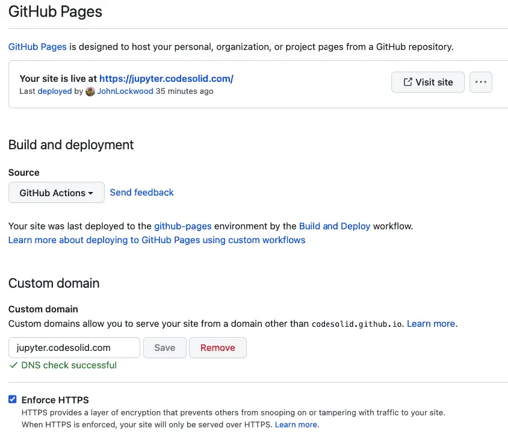
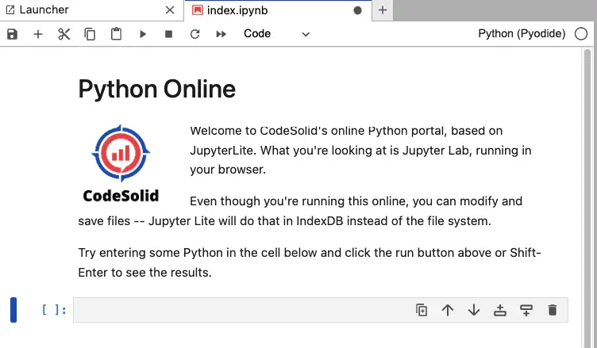

Jupyter Lite: Python in the Browser with Serverless Jupyter
JupyterLite is an unofficial project being developed by the core Jupyter developers. It lets you run Python in the browser in a version of Jupyter notebook that works without a server.
If you follow Python news, you may remember that in the early summer of 2022, there was a lot of buzz around PyScript, another tool that allows you to run Python in the browser. Both these tools are based on Pyodide, which is a port of CPython to WebAssembly.
Unlike Jupyter Lite, however, PyScript does not come with a built-in interactive environment and appears much rougher and earlier in development. In contrast, even though Jupyter Lite is still “unofficial” and no doubt contains many outstanding issues, we were satisfied enough with our early testing to teach you how to add it to your website. But don’t worry – we’re not making you jump first. We’re adding it here too!
Add Jupyter Notebook to Any Website
The goals of this section will be to:
Create a GitHub Pages website based on the JupyterLite Demo.
Show you an example of pointing a subdomain from your website to the resulting GitHub Pages site.
The first goal will be straightforward to adapt to any site from which you might want to “host” your JupyterLite pages. The exact details of the second part will depend a lot on which Domain Name System service provider you have for your site, but once you know the basic technique, you should be able to adapt this article to your needs.
Let’s get started!
Creating the JupyterLite Repository
We begin by creating a repository based on the JupyterLite Demo. You’ll notice there’s a “Use This Template” button there to create a repository of your own that’s not based on a fork, as shown in the lower right of the screenshot below.
Clicking that button begins the process of creating a new repository in your account, as shown below:

An important consideration here is the name of your repository. If you don’t already have a GitHub Pages site associated with your account, I recommend using “YourAccountName.github.io”. This is the default for account-level sites. If you already have an account-level Github pages site, the repository pages site will be deployed to https://account-name.github.io/repository-name.
In addition to a name, the repository will likely default to being created as Private, but as you can see here I’ve changed it to Public. This is important to do unless you have a paid GitHub account. The reason is that for free accounts, you need a public repository to host public GitHub pages.
When you’re happy with your settings, go ahead and click the button to create a repository from the template. By the way, my repository is here if you want to visit, say hello, throw me a star, etc.
Once you have the repository created, click on the settings button (across the top of the repository), then note the left-hand navigation bar, where we’ll make two stops.

Under the first, the Actions / General Tab, shown selected above, select “Allow all actions and reusable workflows, and make sure under Workflow permissions that “Read and write permissions” is checked. Click save on each section.
While still on this left-hand navigation bar, click on Pages. Then under Build and Deployment source, Deploy from a branch is probably selected. We want to change that to select “GitHub Actions”.
To run the action, we need to commit something to the main branch. You can make a minor change to the README.md and commit it to accomplish this. This will take a few minutes to run. If you wish, you can monitor the progress by clicking on the “Actions” item on the top navigation bar of the repository. When it finishes, you should be able to return to Settings, then click on Pages. It may take a few more minutes, but eventually, you should see a message that looks something like this:
I’m going to change that domain name soon, but as I’m writing this, here’s how it looks when I go there.
You may recognize a look and feel that’s very close to JupyterLab when running on the server, but in this case, the notebooks are running strictly on the client side. (That doesn’t mean you can’t save your work, by the way – we’ll have more on how that works in a future article). There are quite a few choices here like Lua and Wren that I may not want to keep going forward, but it’s fine for now.
Now that we have the default site up and running, let’s customize it.
Serving JupyterLite from a Subdomain of Your Website
Create the Subdomain in DNS
GitHub has good documentation on how to set up a custom domain for a GitHub Pages site. I use AWS’s Route53 for DNS, so the steps in my case boiled down to logging into the AWS console and navigating to Route53. I then added a record with the following configuration:
Record Type: CNAME
Record Name: jupyter (this ends up resolving to jupyter.codesolid.com).
Value: codesolid.github.io
Note that the value for the record (the target of the CNAME) is the account or organization-level GitHub pages domain, github.codesolid.io, not the repository-level site, which in this case would be codesolid.github.io/python-online. I was concerned that this might not work because that root domain already has a separate GitHub Pages site it’s serving, but it resolved fine on GitHub’s side.
Configuring Your Subdomain in GitHub Pages
The next step is to go back to your GitHub repository. In Settings / Pages, enter the full domain from which you want to serve your Jupyter Lite site. As we saw when setting the CNAME, the full domain resolves to jupyter.codesolid.com in my case.
It will look something like this, but using your domain name of course:
When working with DNS, remember that it takes time for DNS changes to propagate. How much time? I don’t know in your case – many authors recommend waiting up to a day, but I’ve often found it will generally happen within about a half hour or so. You’re likely to see the DNS check fail several times during that time. If you’re sure you’ve configured everything correctly, you can click the Recheck button on GitHub periodically. At some point during this process, GitHub will also pause for a bit to generate an SSL/TLS certificate. Once it does, you should select Enforce DNS, and your GitHub settings page should look like this:

So at this point, I’m excited to announce that CodeSolid supports doing Python online at https://jupyter.codesolid.com.
Making Changes and Basic Customizations
JupyterLite operates at two levels. On the one hand, there are the pages served, which is what your user sees when they click on the JupyterLite site. On the other hand, your users can also create new files and make changes to the default notebooks and other files. When your users make changes, they’re saved locally in their browser, typically in IndexDB.
If you’re familiar with GitHub, making changes to the default contents is simple. Add your notebook files to the content directory of the repository, commit them to the main branch, and do a push. GitHub will run a build, and they’ll be available on your site in a couple of minutes. The repository contains a requirements.txt file you can use to set up a virtual environment. Because one of the dependencies is JupyterLab, you can run that locally to create and edit your work in a compatible environment.
Building and Serving JupyterLite Notebooks Locally
Of course, you probably also want to test out your Notebooks in JupyterLite too, which is easy to do locally.
I encountered a few build issues at first, so I decided to use the source and see how GitHub actions are doing it. If you’re curious as to the whole process, you can look at the file, .github/workflows/deploy.yml, but to save you a trip, here’s the relevant line:
jupyter lite build --contents content --output-dir dist
That done, serve your site as follows:
cd dist
jupyter lite serve
Your site will be available at http://127.0.0.1:8000.
Adding a Default Page
I wanted to be able to serve a page prominently that helps visitors who might not be familiar with Jupyter Lab use the platform, but I was unsuccessful in creating a “default page,” per se. Finally, I realized that I didn’t need one but could accomplish the same thing with a link. For this purpose, the link format is as follows: https://subdomain.example.com/lab/index.html?path=yourpage.ipynb. By doing this, I was able to begin building out a link I could use, for example from a top-level menu: Python Online (https://jupyter.codesolid.com/lab/index.html?path=index.ipynb).

Acknowledgments
Portions of this tutorial were based on the JupyterLite documentation for deploying to GitHub pages. What I’ve tried to do here is make some of the steps a bit more explicit and also add more detail around some initial domain configuration and site integration.